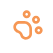

@ Transformando Vidas
Nuestro Impacto
En la fundación Patitas Felices, cada cifra cuenta una historia de esperanza. Trabajamos incansablemente para brindar una segunda oportunidad a quienes más lo necesitan y fortalecer el vínculo entre humanos y animales en nuestra comunidad.

324
Animales rescatados
Últimos 12 meses
289
Adopciones exitosas
Últimos 12 meses
42
Voluntarios activos
Actualmente
18
Eventos Organizados
Últimos 12 meses
Distribución de Actividades
Representación visual de nuestras metas alcanzadas
Rescates
Adopciones
Voluntarios
Eventos
Más que números, son vidas salvadas
Estas cifras reflejan el compromiso inquebrantable de nuestra red de apoyo. Cada rescate y cada adopción es posible gracias a personas como tú que creen en un mundo mejor para los animales.
Tu participación es el motor que nos permite seguir organizando eventos educativos y mantener a nuestros voluntarios activos en el campo.